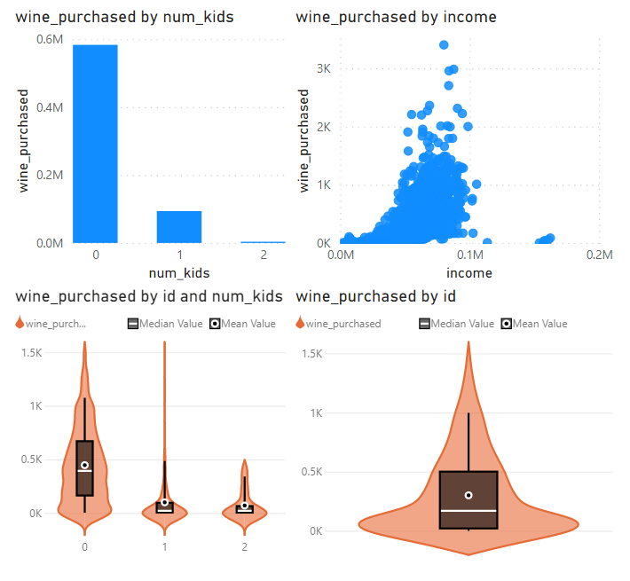
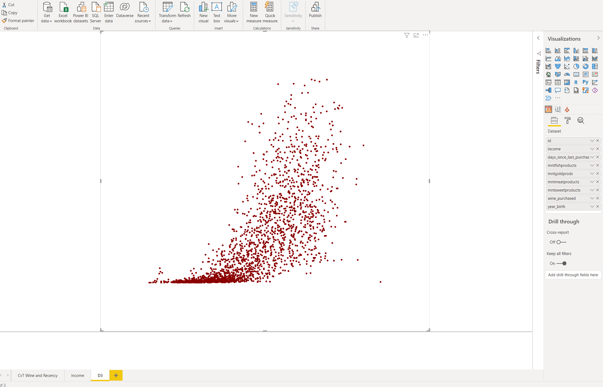
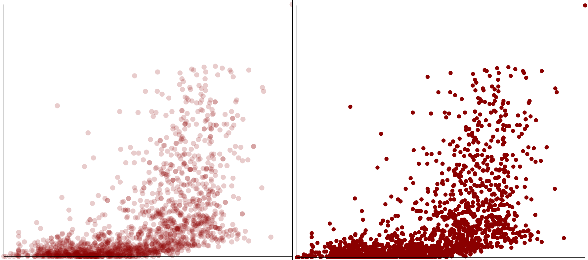
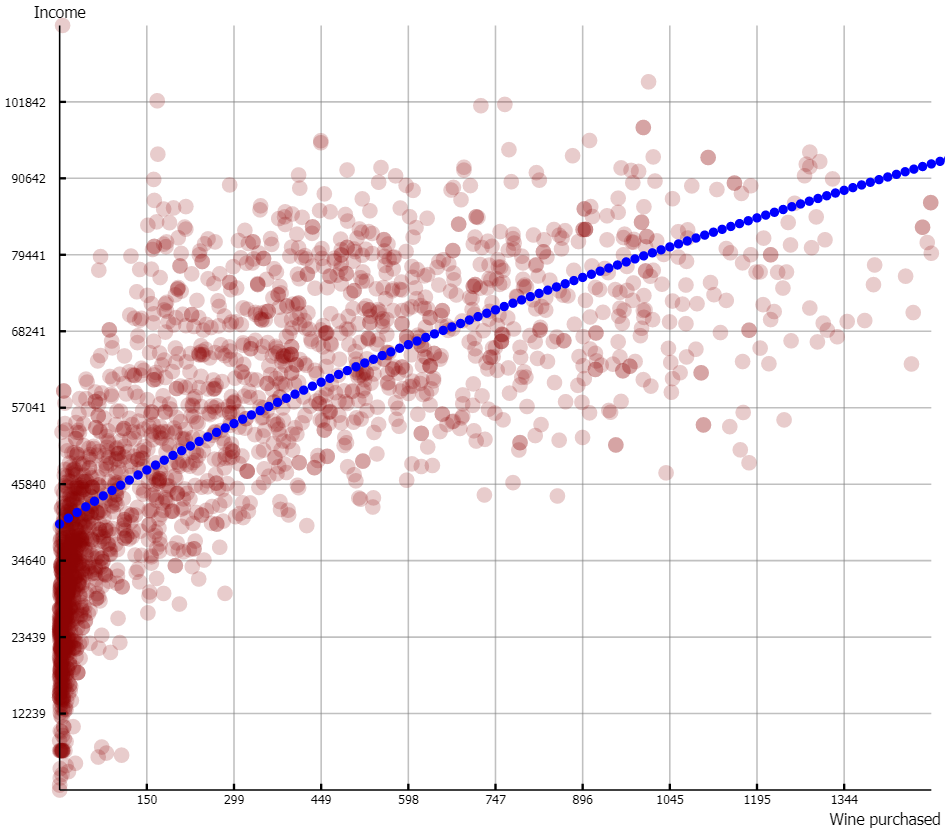
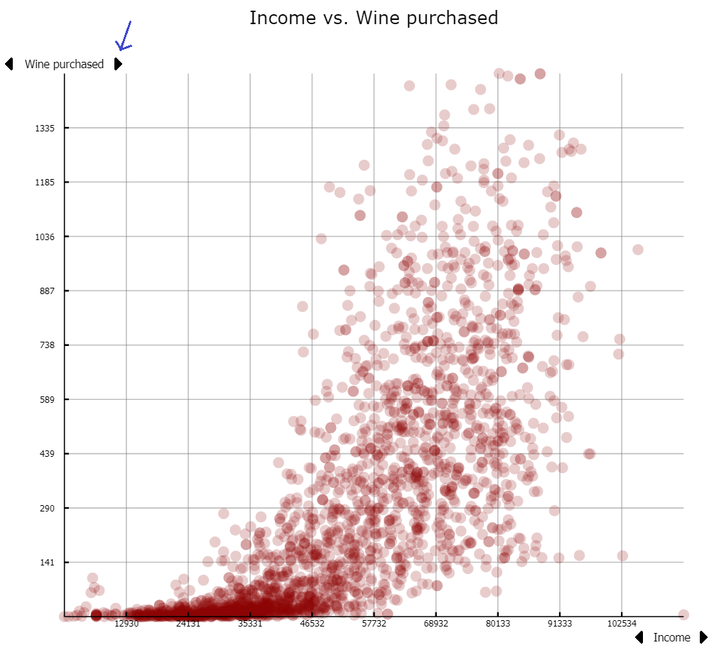
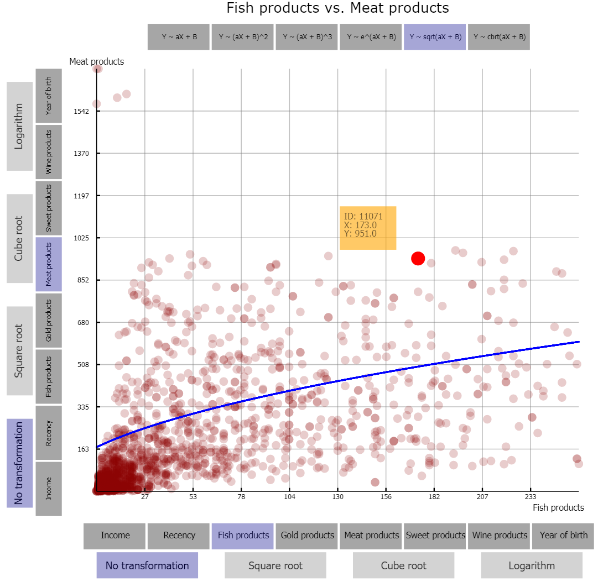

Marketing plays a pivotal role in improving the revenue for companies, and a key aspect of advertising is targeting the ads to individuals who are most likely to be interested in a product. Thus, understanding customer habits is critical to the success of businesses. This is why we decided to do our project on exploring patterns in customer behavior and purchasing habits. Patel (2020) was a suitable dataset for this problem due to containing a large number of descriptive attributes for over 200 customers. Based on our research problem and the limitations of the dataset, we sought to answer the following questions:
Children and Teenagers
Income
Age
Violin Plot Views
Our project was designed primiarily with Power BI. We chose this partially for its advanced capabilities, and also for the fact that both of our careers are likely to use Power BI at some point. We initially tried using a bar chart to visualize various variables by kids and by teens. However, we wanted to find a visual that offered more insight into the distribution of the variables instead of merely average values. For the income and age visuals, we started with scatter plots, which served well for seeing overall relationships between income, or age, and a variable. However, we wanted to allow for easier segmentation of the data in a way such that a user could use the visual to answer questions such as "How much wine does a user purchase each year if they are under 50 years old and earn less than $80,000 per year?" With a little searching, we came across the Violin Plot Power BI visual (Marsh-Patrick, 2021). This creates a visual similar to a bell curve, but the visual is vertically oriented and allows variables to be set next to each other for comparison. We found the Power Slider tool in Power BI (TME AG, 2021) that allowed us to create sliding bars which allow the user to define ranges of ages or incomes. Those bars then update the visuals on that page to reflect the new segment of the data. We taught ourselves how to use the Violin Plot and Slider tools through trial and error.
Initial ideas for visuals (top) vs. violin plots (bottom)
Violin Plot Views: Design Choices
For the first two visual tabs, there were several charts placed side by side. Similar charts were given the same color.
For example, the first tab shows orange charts for charts involving Kids data and blue charts for charts involving Teens data. Orange and blue are color-blind friendly.
In the second tab, the bottom row of charts each pertain to the location where a customer makes a purchase, so they were given the same color. The charts in the top row of the second tab each got a unique color since there were no commonalities between them. The colors in the second tab were selected using Color Brewer (Brewer, 2009) by choosing the following options: qualitative, four levels (Location, Wine Purchased, Days Since Last Purchase, and Number of Complaints), and colorblind safe.
The visuals on tab one were oriented so that all the Kids data was in one column and all of the Teens data was in one column. This allows for easy comparison across the different data categories.
D3 Scatterplot View
Since we did not end up using the Power BI scatterplot visual, we felt we were lacking a way for the user to directly view relationships between variables rather than experiment with filters. We ended up deciding on integrating D3 code with Power BI to create a custom scatterplot with increased design flexibility and additional features that would not be possible with Power BI alone. To connect D3 code with our dashboard, a Microsoft app by DataScenarios (2021) was imported into Power BI as a custom visual. From here, the visual provided an option to add D3 code. Example code Mehta (2018) was used as a reference to know how implementing the D3 code in Power BI varied from implementing D3 on an HTML page. For example, elements such as '#chart' or variables such as 'width' and 'height' were built into the tool.
Overall, we found the D3 tool to be not very well documented, and it had little online support. Debugging often involved re-implementing our code on a standard HTML page and finding the errors. It was made even more difficult by the fact that the version of JavaScript used by the tool seemed to be an old version, so we would encounter problems we had not previously encountered.
Creating the basic scatterplot was relatively straightforward once we became familiar with the D3 tool. We were already familiar with how to create scatterplots from the first project. Our first basic test with the tool was a simple plot of two of the variables.
Initial scatterplot of two variables
D3 Scatterplot View: Feature and Design Choices
A problem with this preliminary scatterplot was that many points were very densely packed together. Furthermore, we were planning on making the points larger to be more user-friendly for hover-over capabilities, which would make them appear even more cluttered. For these reasons, we added a great degree of transparency to the points, so that the user could see how dense points were in a region based on how dark the region was.
Denser areas are more interpretable in the image to the left
Next, details were added to the scatterplots such as grid lines and tick marks with number labels. This is especially important with a visual like this, where the scale varies widely from variable to variable. Hovering capabailities were added as well. If the user hovers over a point, they are able to see the X and Y values of that point. The user may want to see exactly where the point falls on the graph. Furthermore, the customer IDs of the points are shown. Customer IDs are not descriptively useful, but they help the user follow points of interest, such as outliers, as they change views. Holtz (2018) was lightly referenced for hovering interactions, but we found that example to be a little non-responsive, and we quickly figured out how we would go about making the functionality.
The main feature that we sought to "showcase" in this visual was the regression line/curve feature. Such a feature was important for our analysis, as we found that some of the variables had non-linear relationships, and this visual helped us seek out these pairs more easily. This was figured out on our own, although Sagwan (2018) was referenced for regression coefficient formulas. Our method of implementing regression functions was by generating the coefficients for the regression function, generating a uniform distribution of X values, and then generating Y values based on the coefficients and X values. If we generated enough X values, plotting these points would give the appearance of a line or curve.
The blue circles are generated to follow the regression function. Circles would be shrunk down and more densely packed to appear as a line or curve.
The colors chosen for the data points and regression curve are red and blue, respectively. These are two simple, contrasting colors that most color-blind people can distinguish. We thought that the blue regression curve overlaying the red points was easier on the eyes than vice versa.
Another challenge was having the option for the regression function to be non-linear. To achieve this, data was transformed, then fitted on a linear regression line, then transformed back. In addition, we wanted to give the user the option to transform the X and Y scales visually. This might be useful for the user to scale down very large variables such as income. A major challenge was getting this to function properly along with the regression functions.
The last challenge was creating an interface that would allow the user to change variables, axis transformations, and the regression transformation. We thought about using buttons for all of these features, but we also felt that there would be too many buttons if we did this. We thought about giving the user arrows to scroll through variables.
One of our ideas for giving the user choice of variable to display
In the end we decided on using buttons, as arrows would be a small region to click on and would not let the user see all their options at once. We we able to make the buttons reasonably large and spread out.
Final visualization
In the end, from the scatterplot we found that many "products purchased" variables, such as fish purchased, wine purchased, and meat purchased, had an exponential relationship with income. This meant that higher-income customers were buying much more of these products than lower-income customers. We also found pairs we expected to have a relationship to have no relationship, such as age and wine, and income and recency.
Conclusions
Using our visualization, we answered our research questions as shown below:
Children and Teenagers
Income
Age
Overall we think that our Power BI visual allowed us to gain insights into the different customer variables as we had hoped, and the addition of the scatterplot enabled us to make further insights on statistical relationships between variables.
Team Member Contributions
John Cochran
Garrett Swearingen
Source code and Power BI project
Violin Plot Views
[Insert video here]
References
Brewer, Cynthia (2009). ColorBrewer: Color Advice for Maps. Retrieved Dec 13, 2021 from https://colorbrewer2.org/#.
DataScenarios (2021). D3.js Visual - create your own custom visual. Retrieved Nov 16, 2021, from https://appsource.microsoft.com/en-us/product/power-bi-visuals/wa104381354?tab=overview.
Holtz, Yan (2018). Scatterplot with tooltip in d3.js. Retrieved Nov 23, 2021, from https://www.d3-graph-gallery.com/graph/scatter_tooltip.html.
Marsh-Patrick, Daniel (2021). Violin Plot. Accessed Nov 1, 2021 from https://appsource.microsoft.com/en-us/product/power-bi-visuals/WA104381947?tab=DetailsAndSupport.
Mehta, Siddharth (2018). How to render D3.js custom charts in Power BI Desktop. Retrieved Nov 16, 2021, from https://www.mssqltips.com/sqlservertip/5273/how-to-render-d3js-custom-charts-in-power-bi-desktop/.
Patel, Akash (2021). Customer Personality Analysis. Retrieved October 20, 2021, from https://www.kaggle.com/imakash3011/customer-personality-analysis.
Sagwan, Shashi (2018). Linear Regression by hand. Retrieved Nov 18, 2021, from https://medium.com/@shashis890/linear-regression-by-hand-b2d0369adba7.
TME AG (2021). Power Slider by TME AG. Accessed Oct 18, 2021 from https://appsource.microsoft.com/en-us/product/power-bi-visuals/WA200002880?tab=DetailsAndSupport.